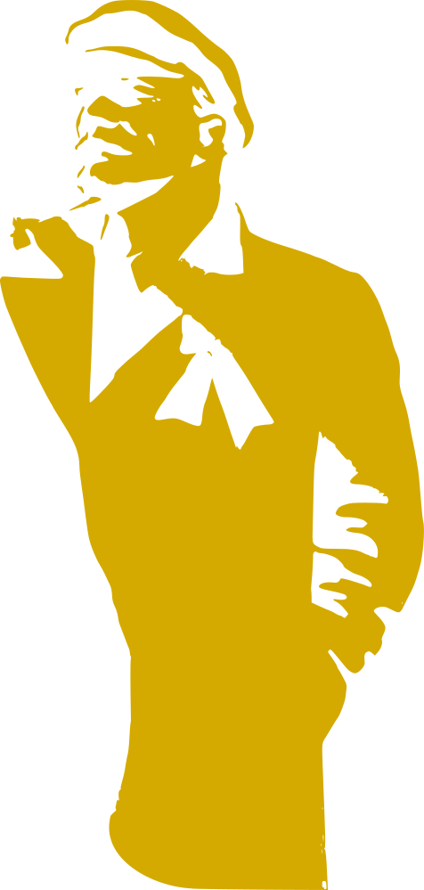

<header id="" class="parallax vh-50 vh-50-ns vh-100-l">
    
    <section id="bg-flag" class="plx-back-4 z-1 vh-100 flex items-start justify-center cover ani-fade-in ani-2s ani-delay-15s ani-backwards"  style="background-image:url(assets/rays.svg);">
    </section>
    <section id="bg-flag" class="plx-back-2 z-2 vh-75 flex items-start justify-start" >
        
    </section>
<section id="lenin" class="z-3 vh-100 w-100 flex items-center justify-end pr5 plx-back-1 ">
    
    </section>
    <section id="title card" class="plx-fore-1 z-4 flex flex-column items-center justify-center" style="">
        <div id="title" class="ani-fade-in ani-15s font-russian near-white  f1 f-headline-l tracked">
        SOVIET &#9773; LINUX
        </div>
        <div id="subtitle" class="ani-fade-in ani-1s ani-delay-1s ani-backwards font-teko near-white f2 tracked">
        The People's Distribution
        </div>
    </section>
</header>

<!-- the main content of the page - more stuff will come in here eventually. -->
<main class="relative z-4 bg-sov-red bg-center bg-top-l contain bg-fixed bg-animate bb bw2 bw3-l b--dark-gray" style="background-image: url('./assets/unbreakable_union.jpg');">
<!-- the aside contains the download links -->
<aside class="relative z-4 bg-center bg-top-l contain bg-fixed" style="background-image: url('./assets/popup_marx_engels_lenin.jpg');">
    <section class="tc mnvh-50 pv5 flex flex-column items-center justify-center bg-sov-yellow-t9 bt bb bw2 bw3-ns b--dark-gray">
  
      <p class="font-teko b tracked f1 sov-red self-center">DOWNLOAD
      </p>
      
  <!-- this section contains an number of 'a' links to download Soviet. There are 3 sections, each with 2 links. The top row also has two stars -->
<section class="w-100 flex flex-row font-hind">
<div class="z-5 w-50 flex flex-column items-center justify-start pb3 ph3">
      <!-- rootfs direct download   -->
      <a class="linux no-underline w-50 ph3 pv3 bg-sov-red hover-bg-dark-red yellow font-teko b f3 f2-l tc bg-animate ba bw1 b--dark-gray br3"
      href="https://sovietlinux.ml/##">
        rootfs Direct
      </a>
      <p class="measure f4 f3-l tl dark-gray">The rootfs is a squashfs that can be extracted into a directory, and accessed through chroot or systemd-nspawn.<br />
      It can also be manually copied to an already formatted partition and directly booted.
      </p>
</div>
<div class="z-5 w-50 flex flex-column items-center justify-start pb3 ph3">
      <!-- rootfs direct download   -->
      <a class="linux no-underline w-50 ph3 pv3 bg-sov-red hover-bg-dark-red yellow font-teko b f3 f2-l tc bg-animate ba bw1 b--dark-gray br3"
      href="https://sovietlinux.ml/##">
        img Direct
      </a>
      <p class="measure f4 f3-l tl dark-gray">
          The img file can be copied to a usb device using <code>dd</code> or any other flashing utility. It will boot and function as a live environment. It uses the same files as the <code>rootfs.</code>
</div>
</section>
<section class="pt4 tracked w-100 flex flex-column justify-center items-center pb3">
      <div class="font-teko f3 f2-l sov-red"><b class="dark-gray">Username:</b> root</div>
      <div class="font-teko f3 f2-l sov-red"><b class="dark-gray">Password:</b>sovietlinux</div>
</section>
</section>
{% include_relative about.html %}
</main>
{% include_relative contact.html %}
